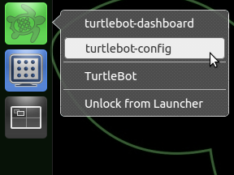

Hello fellow roboticist,
Welcome to the TurtleBot Quick Start Guide.
This guide has a few tips and tricks for working with the TurtleBot and links to several online resource.
Thanks,
TurtleBot Development Team
Quick Start
Step 1: Setup network
The TurtleBot is preconfigured to start ROS and all of the minimum required services for basic operation at bootup. The primary requirement for getting your TurtleBot running is that is needs to be connected to a network so that you can operate it remotely. You can use the Network Manager in the upper right corner of your screen to connect to a WiFi, Ethernet or cellular network. Once connected, the startup scripts will autodetect the current network interface and start ROS. Once a network configuration is setup, the laptop can be closed and placed in the TurtleBot.
Step 2: Run Demos
Once the network is setup the robot can run several demos include Teleoperation and People Following. We suggest starting with these demos to gather experimental data on the robot's performance.
Software Notes

Unity Support
Several tools have been added for improved support in Ubuntu's new Unity interface. Right clicking on the launcher icons will bring up a list of secondary tools that can be launched. Provisional notification support has been added via rosmetalaunch and the launch files stored in /etc/ros/launch.d where an example launch file has been provided. The rosmetalaunch tool is automatically started via upstart after the main TurtleBot node has been launched and will attempt to launch all launch files defined in /etc/ros/launch.d/*.launch in sequential order with a short pause in-between.
Teleoperation
The TurtleBot laptop is configured to start ssh at bootup to allow for remote access to the robot and to use the local command line interface to ROS. While the TurtleBot laptop provides on-board processing power, an additional laptop or desktop can be used as a workstation to interact with the robot. Workstations that have ROS installed will be able to connect to the robot once they have been configured. Alternativly, the TurtleBot may be teleoperated via an Android based cellphone or tablet.
Network Identification
The ros-network-id tool will generate a custom QR code that you can use with an Android application to manage the TurtleBot from your cellphone or tablet. Please be aware that the default operation of the tool attempts to encode the wifi ssid and password into the QR code, so please make sure not to video or photograph the codes in the background. The tool can also be run over a terminal via ssh.
turtlebot_dashboard
The TurtleBot Dashboard provides a wide range of diagnostic information, including the current battery levels for the robot base and the laptop and the state of the power breakers. This GUI can be run locally on the robot or on a workstation that has been configured to use the TurtleBot as the ROS Master.
turtlebot-config
Out of the box, your TurtleBot should be able to run basic demos. However, if your TurtleBot comes with an arm or you are having trouble with your robot recognizing the laptop battery, or have added additional sensors or accessories that provide a serial interface, your robot may be confused and may need autoconfiguration. The turtlebot-config autoconfiguration tool helps identify hardware and generate startup scripts without the hassle of editing udev rules. The first time turtlebot-config is run it will generate the config files in /etc/ros automatically, if you want to re-run the script you must remove the /etc/ros directory or manually copy the files from /tmp/turtlebot-config. The default config files can be found in /etc/ros-fuerte.
turtlebot_calibration
TurtleBots equipped with a gyro can use the turtlebot_calibration package to achieve the best odometry. If your robot has a gyro that is has a maximum yaw rate that is not 250°/sec, you will need to set the gyro_measurement_range parameter in the launch file before attempting calibration. See this ticket or this question on ROS Answers for more information.
turtlebot_arm
The turtlebot_arm package provides support for manipulation with the TurtleBot Arm. This arm can be used with rviz and interactive markers for visualizing teleoperation tasks.
Hardware Notes
Charging - Create
When Turtlebots are charging, their power indicator lights fades on and off, it the light is not fading in and out your robot is not charging. If you have trouble charging the robot, we suggest disconnecting power to the Create, removing the serial connection and turning the Create off before reconnecting the charger. As the indicator light may turn off when the Create is on, we suggest turning the Create back on before turning it off to make sure the Create is actually off.
Kinect Power
The iRobot Create is limited to providing 1.5 Amps at 12 Volts via the power connector. Due to this limitation, the Kinect power output must be disabled for the robot to charge. Otherwise, devices such as a Kinect can discharge the battery faster than it can able to charge which may damage the battery. To prevent this, the power output is disabled in software by default and must be enabled to operate the Kinect. More information can be found here or by looking at the kinect.launch file in the turtlebot_bringup package.